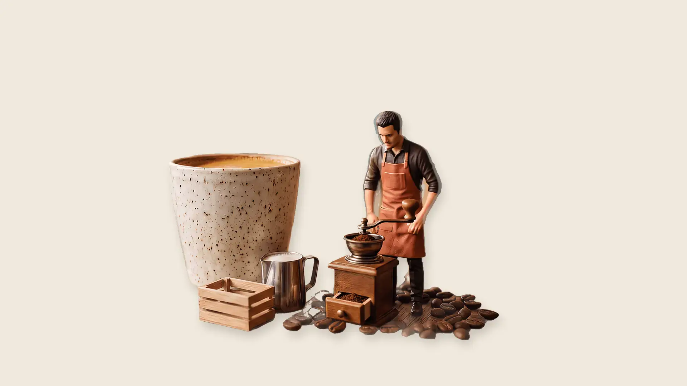
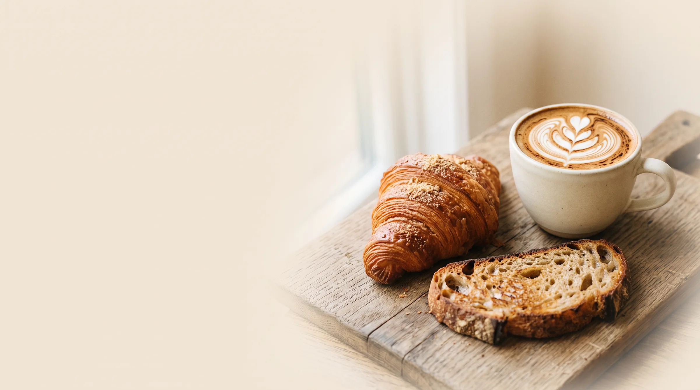
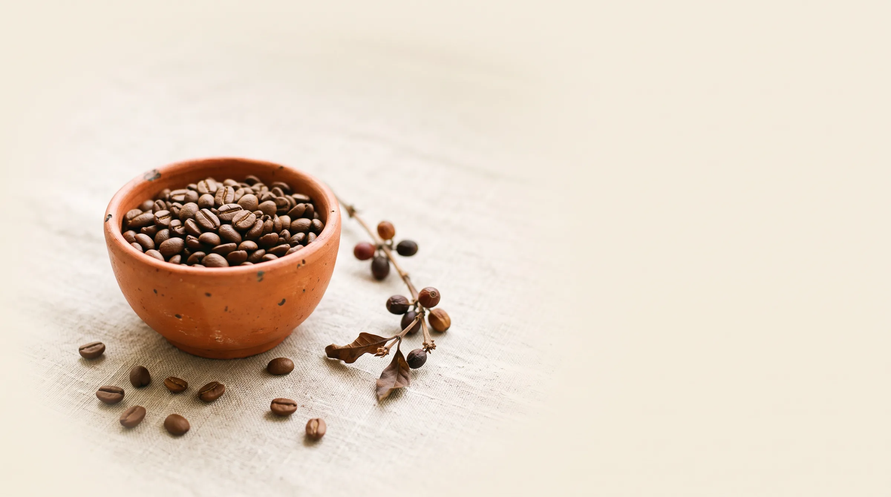
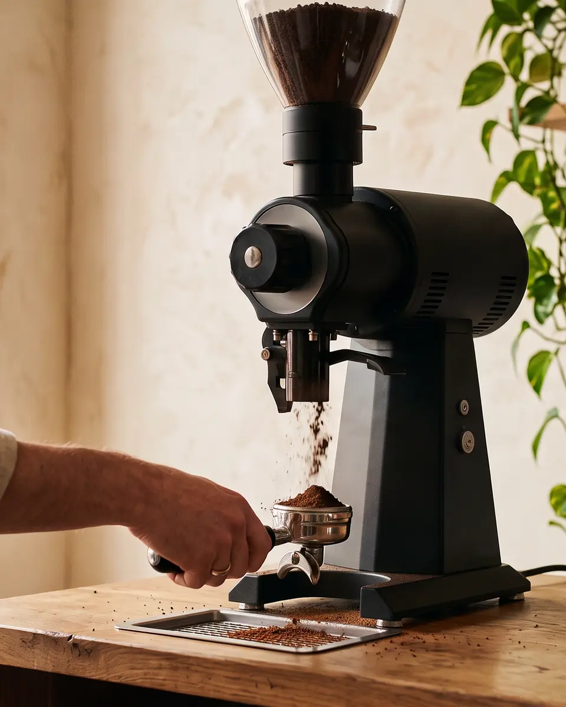
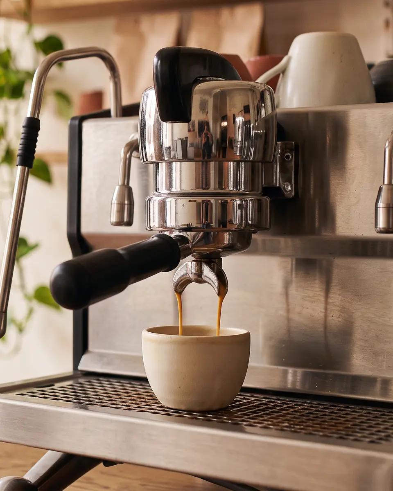
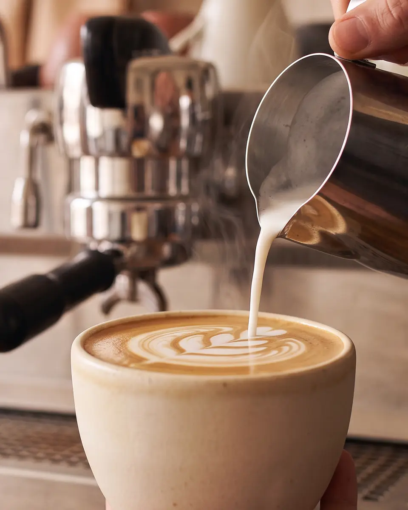
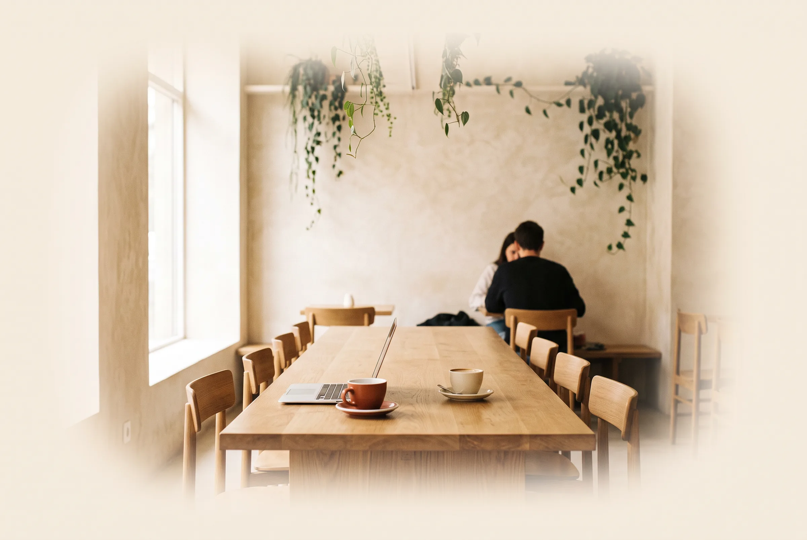
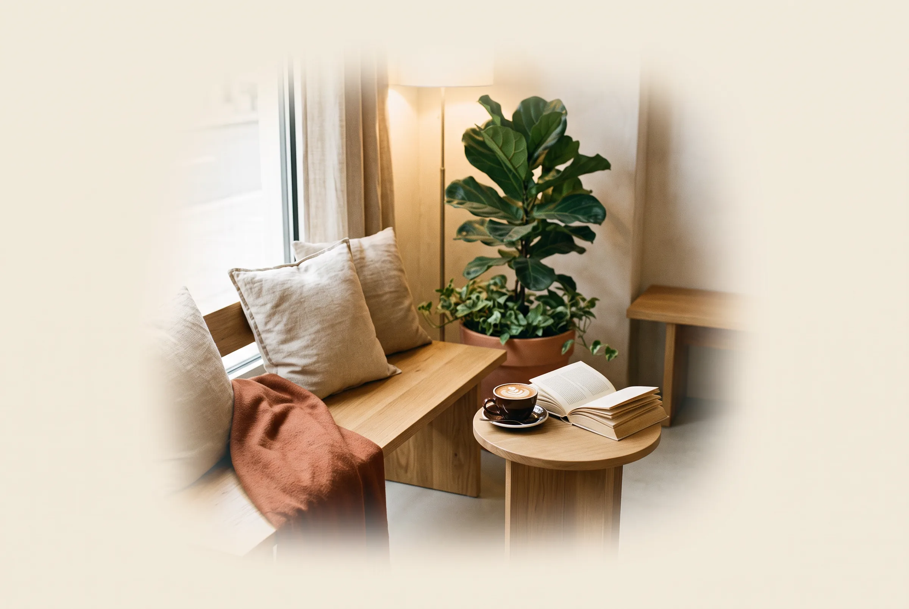
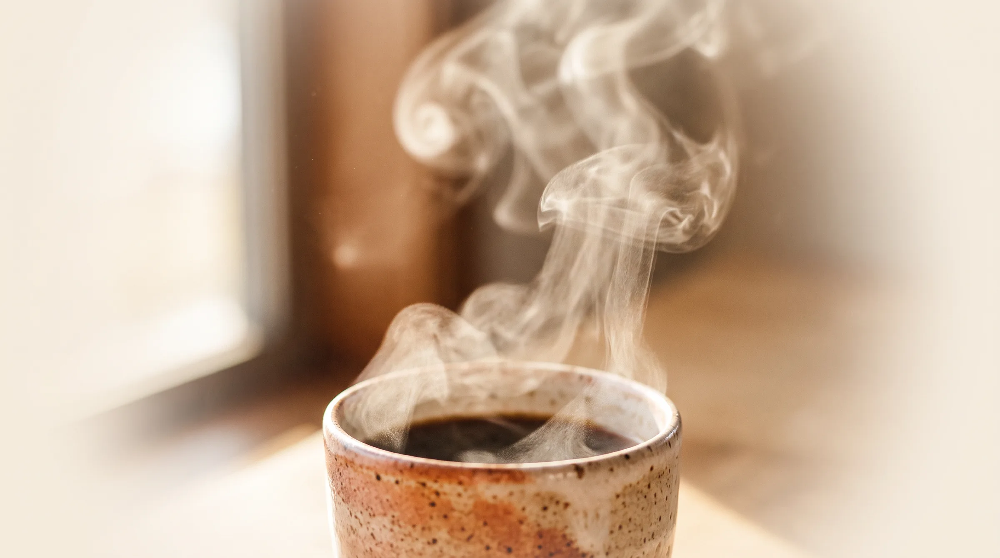

Café recién molido en Palermo Soho
Granos del Huila, tostados en Buenos Aires y preparados a la vista.
Un espresso que sabe a chocolate y caramelo, con un final de frutos rojos.
Te esperamos en Gorriti 4821.
Cómo llegar (abre Google Maps en otra pestaña)
La carta
Lo que sale de la barra, todos los días.
Café
- Espresso doble
- Corto e intenso, para tomar en la barra.
- Flat white
- Espresso doble con una capa fina de leche sedosa.
- Cappuccino
- Como el flat white, pero con más espuma.
- Latte de vainilla
- Para los que lo prefieren dulce.
Frío
- Cold brew
- Preparado en frío. Lo servimos solo o con hielo.
Para acompañar
- Croissants
- Hojaldrados, para mojar en el café.
- Tostadas de masa madre
- Pan de masa madre tostado en el momento.
- Cookies artesanales
- Para la merienda o para llevar.
Lunes a viernes de 8 a 20 · Sábados y domingos de 9 a 21

Del Huila a Palermo
- Origen
- Huila, Colombia
- Notas
- Chocolate, caramelo, frutos rojos
- Tostado
- En Buenos Aires
Lo tuestan acá, así llega fresco a la barra.
-

Molienda
Molemos justo antes de preparar cada taza.
-

Extracción
El espresso cae despacio, con su crema dorada.
-

Leche
La texturizamos hasta que queda sedosa, sin espuma de más.
Una mesa larga y luz de ventana
Madera natural, plantas y luz suave. Hay mesas compartidas para venir con la compu y rincones más tranquilos para charlar.



Horarios
- Lunes a viernes
- 8:00 a 20:00
- Sábados y domingos
- 9:00 a 21:00
Cómo llegar
Gorriti 4821
Palermo Soho, Buenos Aires
- Lun a vie
- 8:00 a 20:00
- Sáb y dom
- 9:00 a 21:00